VII. Manifestaciones
Musicales del Calendario
Cristiano
Navidad
La Navidad o Natividad
del Señor, es la
fiesta
por excelencia del mundo cristiano, que celebra el nacimiento del
Niño
Jesús o Niño Dios. Es una fiesta colectiva y
espontánea,
donde se pueden reconocer los aportes europeos, africanos e
indígenas.
Es la fecha de culminación del año, en la que se invoca a
toda clase de esperanzas para un mejor futuro y la prosperidad. 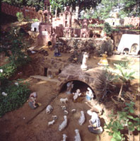Una de
las grandes tradiciones populares es el Nacimiento o Pesebre, que se
incorpora
a partir del proceso de colonización española en el
país
en la dramatización del nacimiento de Jesús en
Belén.
Son variadas las fiestas de esta época. En diversas regiones del
país se celebra, entre otras, la Semejanza de los Pastores; los
Santos Inocentes con los Zaragozas, Locos y Locainas y el Baile del
Mono;
la Paradura, Robo y Búsqueda del Niño. La música
típica
de Navidad incluye Aguinaldos con las Parrandas de Aguinalderos,
canciones
de alabanza o villancicos y, de más reciente fecha, la Gaita
Zuliana.
• Diversiones Pascuales
En la región
oriental de Venezuela te-nemos
una
serie de parrandas muy particulares que se realizan durante la
época
de la Navidad, cantando y bailando frente a las casas. Contienen mucho
teatro de calle con disfraces de animales. Entre las diversiones
más
conocidas tenemos el famoso Pájaro Guarandol, el Carite, el
Chiriguare,
La Burriquita 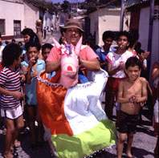y el Mare-Mare. Las Diversiones son escenificadas con la
figura alusiva seleccionada por la comunidad: un pez, un pájaro
o cualquier otro animal. Las melodías que acompañan estas
parrandas son particulares para cada uno de los casos.
• Semejanza y Bajada de Los Pastores
Durante el mes de
diciembre, en algunas poblaciones
de
los estados Aragua, Carabobo y especialmente Trujillo, se celebra la
Semejanza
de los Pastores y también la Bajada de Los Pastores. Esta
celebración
está en-marcada en las fiestas de la Natividad del Niño
Jesús.
En cada localidad se organizan cofradías que se encargan de la
programación,
realización y desarrollo tanto de las actividades religiosas
como
de la manifestación representativa de los pastores. Se requiere
de la minuciosa preparación de vestuarios, así como los
correspondientes
ensayos de la música que se ejecuta durante los diferentes actos
que conforman los Pastores. 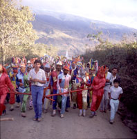Uno de los elementos más destacados,
por su colorido, es el Gajillo o Chineco, bastón sonajero con el
que danzan. 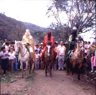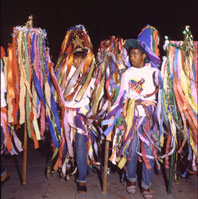
Los instrumentos musicales utilizados son el Chineco,
Cuatro,
Tambora, Furruco, Charrasca y Maracas. Con ellos se acom-paña
los
diferentes cantos, propios de cada uno de los momentos de la
manifestación
con las procesiones, bailes y velaciones al Niño Jesús.
La
representación de los pastores la llevan a cabo exclusivamente
los
hombres, muchos de los cuales se visten de mujeres. 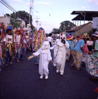Se destacan
personajes
tales como el Cachero, el Titirijí vestido de ovejo, personaje
que
se encarga de bromear y distraer al público.
• Santos Inocentes: El Baile del Mono
Es una de las
manifestación que se realiza en
las
poblaciones de Caicara de Maturín en el estado Monagas y en
Caicara
del estado Bolívar. Esta celebración se lleva a cabo
el
28 de diciembre, Día de los Santos Inocentes, fiesta que forma
parte
del ciclo de la Navidad.
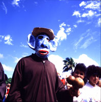
El baile se realiza en filas enca-denadas en la que el
personaje principal es el “Mono”. Este es un personaje disfrazado que
imita
los movimientos de este animal y se encarga de animar la fiesta. Las
comparsas
recorren las principales calles del pueblo al compás de la
música
ejecutada con Cuatro, Tambora, Maracas, el Carángano, llamado
aquí
el Ciriaco, Carrizos, Guaruras y Cachos de ganado.
• Santos Inocentes: Los Saragozas, Locos y Locainas
Esta fiesta se
celebra el día 28 de
diciembre,
para conmemorar la muerte de niños inocentes ordenada por el Rey
Herodes, en la época del nacimiento del Niño
Jesús.
Los Saragozas es una manifestación popular propia del estado
Lara,
pero los Locos y Locainas se celebran en muchas otras regiones del
país.
La celebración se inicia en horas de la madrugada, con repiques
de las campanas de la iglesia y la quema de pólvora. 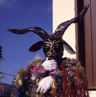Durante el
día, los participantes, a manera de comparsas, desfilan por las
calles del pueblo difrazados de locos, con máscaras y trajes muy
vistosos, confeccionados según sus ocurrencias personales. 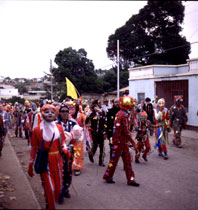En los
Saragozas, la música que acompaña el canto y el baile se
ejecuta con los instrumentos tradicionales del Golpe Larense. Los
Saragozas
simbolizan conjuros contra el mal, razón por la cual las madres
les entregan a sus niños para que sean bailados y protegidos
contra
el mal.
• El Espuntón
Es una fiesta que se
realiza en honor al Niño
patrono
del pueblo de Caigua del estado Anzoátegui, así como en
Pueblo
Llano en el estado Mérida. La celebración coincide con el
primero de enero o año nuevo. 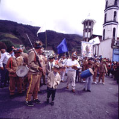En Pueblo Llano, los hombres se visten
de militares de uniforme marrón, portando fusiles y realizan una
danza con el fusil y una bandera.
• Paradura, Robo y Búsqueda del Niño
La paradura del
niño simboliza el crecimiento
del
Niño Jesús, celebración en que su imagen es
levantada
del tradicional pesebre. Una de las personas de la comunidad se roba la
imagen
del niño, luego al enterarse de lo ocurrido, el resto de la
gente
procede a su búsqueda, visitando diferentes casas. En la casa
donde
se encuentra el niño, la familia recibe a los visitantes con
bebidas
y bizcochos. Durante la caminata de búsqueda y el retorno
con el niño encontrado, se entonando cantos propios de esta
festividad.
La región andina se destaca con este tipo de celebración.
Fiestas
de
San
Benito
En la costa sur del
Lago de Maracaibo, especialmente
en
los estados Zulia y Trujillo, entre el 26 y el 31 de diciembre de cada
año, se lleva a cabo la fiesta de San Benito. Fiesta en la que
se
destaca la ejecución del conjunto de tambores denominados
Chimbangueles,
con los cuales se acompaña un baile libre y colectivo. San
Benito
de Palermo es el santo patrón del pueblo de Bobures, lugar donde
la celebración de la fiesta está bien arraigada,
así
como en las poblaciones de El Batey y Gibraltar. Familias reunidas en
cofradía,
organizan los vasallos o esclavos del santo, quienes con disciplina
realizan
los ensayos, colectas y procesiones en homenaje al Santo Negro. Parte
importante
de la fiesta, además de las visitas mutuas que se rinden a los
santos
de Bobures, El Batey y Gibraltar, son las procesiones y las danzas que
se realizan frente a la iglesia, los pagos de promesas y los recorridos
por las calles.
El culto a San Benito
también es conocido en
otras
regiones de Venezuela, especificamente en los estados Falcón,
Lara,
Mérida, Trujillo, Yaracuy y Zulia. 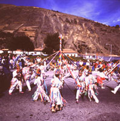En algunas
poblaciones del estado
Mérida se organizan grupos llamados comparsas que con
antelación
preparan sus danzas y vestuarios. Los Giros o personas que
acompañan
al Santo, van vestidos de blanco con largas cintas de colores, con una
corona de cartón y plumas en la cabeza y una Maraca en la mano.
La danza se ejecuta alrededor del Sebucán, un palo del cual
penden
cintas de colores que toman los Giros para formar vistosas figuras.
Vasallos
o Danceros de la Candelaria
El 2 de Febrero se
celebra en La Parroquia,
población
del estado Mérida, la ceremonia de los Vasallos o Danceros
de la Virgen de la Candelaria, representación que se realiza
para
orar por la fecundidad y buena fertilidad de la tierra. 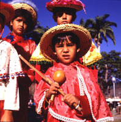La cofradía
de los Vasallos prepara los vistosos trajes que se utilizan en la
representación.
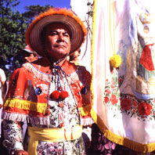La danza
acompañada por Violines, Tiples, Cuatro y Tambora es ejecutada
exclusivamente por hombres, formando dos filas frente al templo
encabezados
por un capitán.
Carnaval
• El Calipso
Es una
manifestación presente en diversas
regiones
de Venezuela, pero se cultiva especialmente en Guayana y en la
región
Nor-Oriental. La festividad es propiamente dedicada a la
diversión,
siendo una fiesta en la que se conjugan música, baile y
vistosos
vestuarios. La celebración requiere de una preparación
minuciosa
la cual se inicia muchos meses antes. 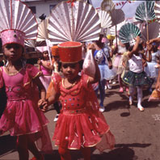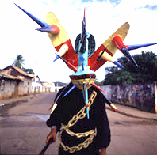Organizaciones
denominadas comparsas
son las encargadas de la selección de difraces, los cuales en
general
se relacionan con personajes característicos de los pueblos, sin
dejar atrás los tradicionales mineros, los diablos, las madamas
y los
mediopintos en la ciudad de El Callao, en el estado Bolívar,
donde es el principal escenario
tradicional
del carnaval, con su ritmo del Calipso de El Callao. La música y
el baile
están
dispersos en todo el pueblo y actualmente utilizan
amplificación
electrónica, negociando con su original conjunto instrumental
compuesto
por tambores Bum-Bac, Cuatro, Rallo, Campana, Maracas, Bajo
Eléctrico
y el característico canto en patois que mezcla frases en
inglés y
español.
El Calypso en Oriente como en Güiria, se ejecuta con el
instrumental de
origen
trinitario, los conjuntos de Steel Band.
• Diversiones Orientales
Esta manifestación es similar a las
Diversiones
Pascuales en Navidad, pero ocurre durante el Carnaval.
• El Mare-Mare
En la región
Nor-Oriental se conoce como
Mare-Mare
una diversión oriental muy famosa propia del Carnaval,
“Mare-Mare
de los Indios , no se puede comprender . . . ”. Esta canción se
refiere a los Kari’ña pero no se origina musicalmente de esa
cultura.
Por otro lado, el instrumental de origen indígena
Kari’ña,
las maracas y las flautas de pan o Carrizos llamados “mare” y plural
“mare-mare”,
junto con el baile, es una de las expresiones indígenas de
Venezuela
de mayor influencia que se ha incorporado al mestizaje criollo. El
nombre
de la manifestación Mare-Mare, proviene del instrumento Mare.
Existen
tres versiones, el Mare-Mare Americanito ejecutado con Canto, Cuatro y
Guitarra; el Mare-Mare con Carrizos además del Tambor y
Guitarra;
y el Mare-Mare Criollo con Marimba, un instrumento de una sola cuerda
de
metal. También se ejecutan por las calles las flautas Mare-Mare
o carrizos en las Parrandas de Carrizos en Navidad.
• El Entierro de la Sardina
Durante el Carnaval,
en el pueblo de Naiguatá
del
Litoral Central, Municipio Vargas del Distrito Federal, se reunen
grupos
de la comunidad para formar las llamadas comparsas de carnaval, quienes
preparan carrozas y vistosos vestuarios que simulan personajes de la
vida
pública local o nacional. Con el Entierro de la Sardina el
Miércoles
de Ceniza, se pone fín al período de las fiestas del
Carnaval.
La procesión contiene la imagen de una sardina rodeada con
utensilios
y alimentos asociados con este pescado como latas de aceite de cocinar,
sartenes y otros.
Bajada de los Palmeros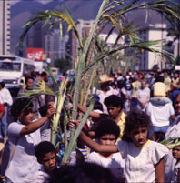
Manifestación que toma lugar en Chacao,
Caracas, Edo. Miranda, de unlarga tradición haciendo reverencia
la cerro del Avila el Viernes de Concilio, donde un grupo seleccionado
de personas, adultos y niños, recogen las palmas y
pernoctan en el cerro.
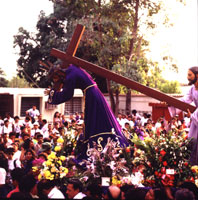El Nazareno de Achaguas
El Nazareno más famosos de Venezuela sucede en Achaguas, Edo.
Apure, el Miércoles Santo.
Velorios
de
Cruz de Mayo
El motivo principal de
la celebración de la
Cruz
de Mayo es rendir a la naturaleza un tributo por la entrada de la
estación
lluviosa. A partir del día 3 de mayo y con
carac-terísticas
propias en cada región se venera la Santa Cruz. Se realizan en
su
honor ceremonias que son organizadas por sociedades, cofradías o
por iniciativa particular, en las cuales se pagan promesas formuladas
generalmente
por motivos de salud o por devoción. Se levantan
bellísimos
altares decorados con mucho colorido de flores y frutas en
casas particulares o locales públicos. Tambores, Bandolas,
Mandolina
y Guitarra son algunos de los instrumentos regionales con los que se
festeja
musicalmente a la Cruz de Mayo, entonando toques de tambor, cantos de
Fulía
y Velorios. Los velorios con Bandola Llanera en Barinas son un ejemplo
único de polifonía vocal a tres o más voces.
San
Isidro Labrador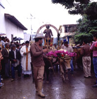
Ocurre el 15 de mayo en varios estados del país como
Falcón, Mérida, Miranda, Monagas, Portuguesa y Trujillo.
Los Diablos
Danzantes de Corpus Christi
Los Diablos Danzantes
es una manifestación
que
se celebra cada año durante la festividad del Corpus Christi en
Chuao, Naiguatá, San Francisco de Yare, Ocumare y Turiamo,
estados
Aragua y Miranda. La celebración requiere de la
disposición
de la comunidad para conformar las cofradías que se encargan de
la organización y elaboración de los vistosos trajes y
máscaras
de diablos, de la preparación de los actos religiosos y toman
respon-sabilidad
de los aspectos económicos. 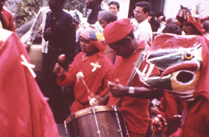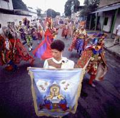Paralelamente
existe la cofradía
organizada por los danzantes, donde se establecen los cargos
jerárquicos
de la representación: Primer Capataz, Segundo Capataz, el
Arreador,
la Capataz, el Cajero y el Portaestandarte, resaltándose en
éstos
aspectos y responsabilidades similares a los diablos de otras
poblaciones.
El
Tamunangue en San Antonio de Padua
Es una
expresión de origen religioso
cristiano
popular, propia del estado Lara. La fiesta se celebra el día 13
de junio, en honor a San Antonio de Padua. Sinembargo, el Tamunangue
puede
realizarse en cualquier otro día del año para cumplir
pagos
de promesas de algún devoto. El Tamunangue consta de siete
danzas o sones, los cuales van precedidos por la Salve y por una pieza
independiente conocida como la Batalla, la cual suele ejecutarse
durante
la procesión. 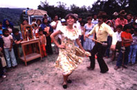Los movimientos de la danza en grupo son los más
elaborados de nuestro foklore. El conjunto instrumental con el que se
acompaña
el canto y el baile está conformado por el Cuatro, Medio Cinco,
Requinto o Cuatro Monterol, Seis, Tambora de Golpe, el Cumaco o
Tamunango
y las Maracas. Los siete sones o danzas del Tamunangue se denominan La
Bella, El Chichi-vamos o Yeyevamos, La Juruminga, El Poco a Poco, La
Perrendenga,
El Galerón, El Seis Figureao.
Bailes de Tambor en San Juan Bautista
Esta fiesta se
celebra en una amplia zona
geográfica
del país, la región costeña y subcosteña de
los estados Miranda, Aragua, Carabobo, Yaracuy y el Distrito Federal.
El
día de San Juan Bautista es el 24 de junio, una de las fiestas
cristianas
más difundidas en el mundo cristiano occidental. En el estado
Miranda,
se festeja en la gran mayoría de los poblados de origen
afro-venezolano,
especialmente en la región llamada Barlovento. 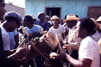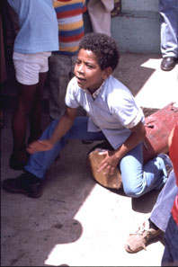En el Distrito Federal
y el estado Aragua se celebra sobre todo en los pueblos de la costa.
Los
bailes llevan el nombre del conjunto de tambores que se ejecutan para
la
celebración y tienen sus particularidades de ejecución
entre
una comunidad y otra. Se destacan el Tambor Grande o Mina, el Tambor
Redondo
o Culo ‘e Puya, los Tambores Cumaco, las Pipas y la Quichimba. En los
pueblos
de la costa de Yaracuy, Carabobo y Aragua los bailes se llaman Sangueos.
Parrandas
de
San
Pedro
La Parranda de San
Pedro es una diversión
popular
de gran colorido que, en homenaje al Santo, se practica en las
poblaciones
mirandinas de Guarenas y Guatire el 29 de junio de cada
año.
Consiste en una representación dramática, donde el
escenario
está representado por cualquier calle. En los personajes se
incluye
a un hombre vestido de mujer, María Ignacia, quien debe bailar
todo
el día para pagar la promesa por la recuperación de su
hija
enferma. 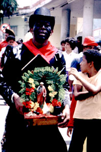Otros son el Abanderado, San Pedro, el Cargador, los
Tucusitos,
los Sanpedreños Danzantes, la Diabla, el Sanpedreñito.
Después
de la misa, los parranderos recorren las calles cantando, bailando y
visitan
las casas de conocidos y familiares. Los cantores del conjunto musical
de Cuatro y Maracas solas duplicadas entonan versos humorísticos
sobre los personajes que bailan.
Baile
de los
Pintaos
En Altagracia de
Orituco en el estado
Guárico,
se celebra el Baile de Los Pintaos alrededor del día de la
Virgen
del Carmen el 16 de julio, como también el día de la
Virgen
María el 15 de agosto. Esta celebración no tiene
vinculación
directa con un solo santo o virgen, aunque se baile en esas fechas,
además
de otras. La parranda se acompaña con el Cuatro, Maracas y
Tambora,
mientras el bailador disfrazado de mujer y con sombrero de cogollo
adornado
de cintas y flores, canta en falsete.  Los parranderos que
los rodean
tienen la cara pintada de negro con hollín mezclado con aceite,
en caso de que sean blancos, de donde proviene el nombre del baile.
Estos
se turnan a bailar individualmente dentro de una ronda formada por el
grupo.
Los parranderos que
los rodean
tienen la cara pintada de negro con hollín mezclado con aceite,
en caso de que sean blancos, de donde proviene el nombre del baile.
Estos
se turnan a bailar individualmente dentro de una ronda formada por el
grupo.
Baile
de las
Turas
Baile que se realiza
en la región
Centro-Occidental
para festejar la cosecha del maíz en los días 23 y 24 de
septiembre. Las flautas que se utilizan durante el baile ritual se
denominan
las Turas y están construidas de bambú. Las Turas chicas,
son propias de la fiesta más pequeña, que precede a la
principal
y que se realiza cuando el maíz está tierno. 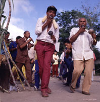Las Turas grandes
se tocan durante la fiesta de la Tura grande, que es la más
importante
y se realiza cuando el maíz está seco. Se incluyen
además
los Cachos o cráneos de venado y las Maracas.